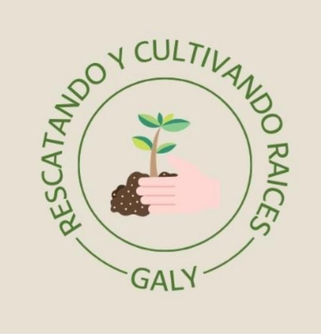
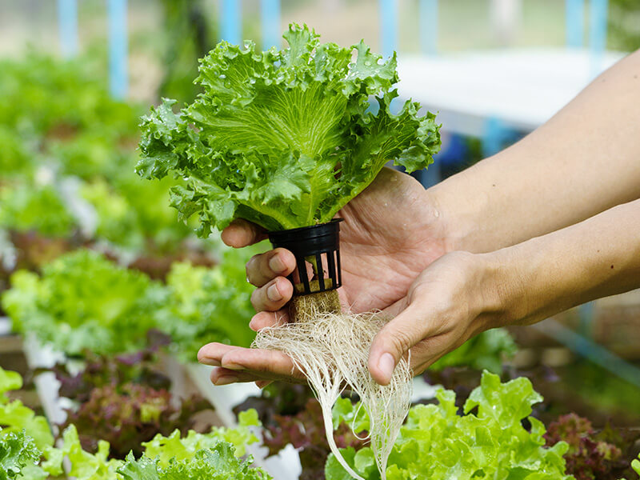
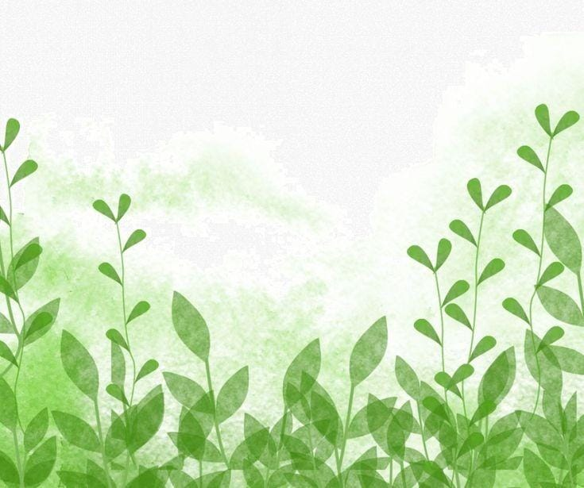

MEF
PROYECTO PEDAGOGICO PRODUCTIVO

CONTEXTO
.jpeg)
.jpeg)
.jpeg)
La Cabecera Municipal se extiende sobre una superficie aproximada de 351 hectáreas o 3,51 km2. Los restantes 1.496,53 km conforman la superficie rural del municipio distribuida en 12 Corregimientos. En el sector rural se destaca una inmensa extensión territorial de terrenos baldíos conocidos popularmente como “Los Playones de Plato”. la ubicación geografica del municipio le permite explotar de forma permanente el rio y la agricultura siendo estas de su principal fuente economica, debido a que los agricultores ocupan gran parte del año cultivando en las zona próximas al rio aprovechando la baja del mismo, y en caso de presetarse inundaciones los agricultores aprocvechan la parte acolinada del municipio. Ahora bien la comunidad escogida para la elaboraciond de nuestro proyecto se encuentra ubicada en la zona ocidental del municipio en el barrio policarpa, conocimo popularmente como “la pola” este es uno de los barrios mas tradicionales y antiguos del municipio, dentro de sus predios proximos a la comunidad a trabajar se encuentran parques y las instalaciones del acueducto municipal que abastece de agua a toda la comunidad.
FORMULACIÓN DEL PROBLEMA
¿Cómo por medio del uso de nuevas tecnologías agrícolas e innovaciones implementadas en una huerta escolar hidropónica, podemos generar un interés sobre las raíces y tradiciones agrícolas del municipio en la comunidad educativa del centro horizon gimnasio bilingüe especialmente a los alumnos del grado 5to y padres de familia?



OBJETIVOS
OBJETIVO GENERAL
generar un interés sobre las raíces y tradiciones agrícolas del municipio en la comunidad educativa del centro horizon gimnasio bilingüe especialmente a los padres de familia y alumnos del grado 5to, por medio del uso de nuevas tecnologías agrícolas e innovaciones en la realización de un huerto escolar hidropónico.
Implementar estrategias pedagógicas innovadoras y efectivas que pueden mejorar las habilidades y destrezas de los estudiantes en el ámbito agrícola.
generar un interés genuino en la comunidad hacia la agricultura y el desarrollo de nuevas competencias, generando así un aprendizaje significativo.
Evaluar los resultados obtenidos y establecer una comparación entre lo que se encontró y lo que se logró.
INSTRUMENTOS DE RECOLECCIÓN DE DATOS
.jpeg)
.jpeg)
.jpeg)
ESTANDAR DE COMPETENCIA BÁSICA
| ESTANDAR | COMPETENCIA |
|---|---|
| Identifico estructuras de los seres vivos que les permiten desarrollarse en un entorno y que puedo utilizar como criterios de clasificación. (ciencias naturales y de medio ambiente) |
• Describe las partes de las plantas (raíz, tallo, hojas, flores y frutos) de su entorno, según características observables. • Propone acciones de cuidados a plantas y animales, teniendo en cuenta características como tipo de alimentación, ciclos de vida y relación con el entorno. • Desarrolla habilidades agrícolas aprovechando los recursos disponibles en el centro escolar, para la producción de alimentos. • Reconoce la importancia de animales, plantas, agua y suelo de su entorno y propone estrategias para cuidarlos. |
| Me identifico como un ser humano único, miembro de diversas organizaciones sociales y políticas necesarias para el bienestar y el desarrollo personal y comunitario; reconozco que las normas son acuerdos básicos que buscan la convivencia pacífica en la diversidad. (Ciencias sociales) |
• Establece relaciones entre el clima y las actividades económicas de las personas en su entorno. • Reconoce, describe y compara las actividades económicas de algunas personas en su entorno y el impacto de ese trabajo en la comunidad. |
| Identifico y uso medidas relativas en distintos contextos (matemáticas) |
• reconoce las unidades de medidas y Realiza mediciones con unidades de medida estándar de: longitud, masa, área, capacidad y tiempo. • Reconoce la idea de horizontal, vertical, paralelo y perpendicular en distintos contextos y su condición relativa con respecto a diferentes sistemas de referencia. |
ESTRATEGIAS PEDAGÓGICAS
• Reuniones con los miembros participantes del proyecto, donde se tratan temas relacionados con el mismo.
• Presentación de videos educativos y carteleras a modo de tutoriales.
• Entrega de material impreso con información acerca de los proyectos pedagógicos productivos y los cultivos hidroponicos.
• Organización de trabajo mancomunado.
• Asesoría de técnicos en cuanto a la utilización de fertilizantes.
• Concientización de la importancia de la conservación del medio ambiente, por medio de charlas y reuniones.
• Conversatorio con los participantes del proyecto y otros invitados de la comunidad, donde cada uno expone sus ideas y conocimientos acerca del tema.
• Toma de decisiones por medio de voz y voto, para que así la opinión de todo sea valiosa.
• Presentación de videos educativos y carteleras a modo de tutoriales.
• Entrega de material impreso con información acerca de los proyectos pedagógicos productivos y los cultivos hidroponicos.
• Organización de trabajo mancomunado.
• Asesoría de técnicos en cuanto a la utilización de fertilizantes.
• Concientización de la importancia de la conservación del medio ambiente, por medio de charlas y reuniones.
• Conversatorio con los participantes del proyecto y otros invitados de la comunidad, donde cada uno expone sus ideas y conocimientos acerca del tema.
• Toma de decisiones por medio de voz y voto, para que así la opinión de todo sea valiosa.
ESTRATEGIAS EVALUATIVAS
• Identificar, cuantificar y valorar los costos y beneficios que se generen del proyecto.
• Supervisa los avances y realización del proyecto.
• Guía de observación.
• Analizar el impacto social que ha generado el proyecto en la comunidad por medio de encuestas que miden el grado de satisfacción.
• Calcular el impacto ambiental que cause el proyecto en la comunidad por medio de análisis de la flora existente y la calidad del agua.
• Con el fin de determinar lo aprendido se realizarán cuestionarios al finalizar cada tarea a los miembros participantes del proyecto, además de evaluar la voluntad de cooperación.
• Se tendrán en cuanta la utilización de sistemas estándares de medición de; distancia, peso, volumen, temperatura y porcentajes.
• Supervisa los avances y realización del proyecto.
• Guía de observación.
• Analizar el impacto social que ha generado el proyecto en la comunidad por medio de encuestas que miden el grado de satisfacción.
• Calcular el impacto ambiental que cause el proyecto en la comunidad por medio de análisis de la flora existente y la calidad del agua.
• Con el fin de determinar lo aprendido se realizarán cuestionarios al finalizar cada tarea a los miembros participantes del proyecto, además de evaluar la voluntad de cooperación.
• Se tendrán en cuanta la utilización de sistemas estándares de medición de; distancia, peso, volumen, temperatura y porcentajes.
RESULTADO Y ANÁLISIS
A la hora de realizar nuestro análisis de resultados tuvimos encuenta distinto factores como:
Sostenibilidad ambiental
Calidad de producto
Análisis de mercado
Rendimiento de cultivo.
Ahora bien, si nos vamos a uno de nuestros objetivos principal el rescate de las tradiciones agrícolas, podemos decir que se cumplió el objetivo a cabalidad, ya que pudimos observar como los alumnos día a día se interesaban más e indagaban más sobre el cultivo y las diferentes formas en las que podían poner a crecer una planta, de ahí que mucho de ellos tuvieron la iniciativa de sembrar desde sus casas, para luego traer a la escuela y trasplantarlos en el huerto hidroponico, otros también fueron más osados al realizar en sus propias casa pequeños huertos hidropónicos en donde ponían a germinar semillas de maíz, cilantro, ají, tomate, entre otros.
Sostenibilidad ambiental
Calidad de producto
Análisis de mercado
Rendimiento de cultivo.
Ahora bien, si nos vamos a uno de nuestros objetivos principal el rescate de las tradiciones agrícolas, podemos decir que se cumplió el objetivo a cabalidad, ya que pudimos observar como los alumnos día a día se interesaban más e indagaban más sobre el cultivo y las diferentes formas en las que podían poner a crecer una planta, de ahí que mucho de ellos tuvieron la iniciativa de sembrar desde sus casas, para luego traer a la escuela y trasplantarlos en el huerto hidroponico, otros también fueron más osados al realizar en sus propias casa pequeños huertos hidropónicos en donde ponían a germinar semillas de maíz, cilantro, ají, tomate, entre otros.
.jpeg)
CONCLUSIONES
La hidroponía ofrece importantes ventajas en términos de rendimiento, eficiencia, uso de recursos, control ambiental y calidad del producto. Estas ventajas hacen de la hidroponía una opción atractiva para proyectos productivos pedagógicos, especialmente en áreas con limitaciones de espacio o recursos hídricos, que era una de nuestras limitantes, ya que la institución no contaba con un suelo para poder cultivar de la forma tradicional Sin embargo, es importante considerar los costos iniciales de establecer y mantener los sistemas hidropónicos si se realizan a gran escala, es decir si desde un principio se espera obtener grandes beneficios económicos, mientras que con nuestro proyecto pensamos en reinvertir en el huerto en tuberías de agua, bomba de agua y nuevos hidropónicos para extender más la huerta, así como también se debe capacitar al personal para su correcta administración
.jpeg)
EVIDENCIAS
.jpeg)
.jpeg)
.jpeg)
.jpeg)
.jpeg)
.jpeg)
.jpeg)
Laylani orozco
Ana Cervantes
Yuliza Martínez
Gabriel Molina
V Semestre
Cap: Plato.
.jpeg)